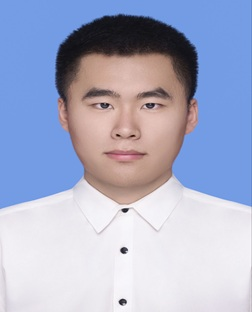

曹阳
Yang Cao
本科生
环境系
湘潭大学


Yang Cao
本科生
环境系
湘潭大学
围绕人工智能、机器学习、智能环境监测、多模态学习与可信人工智能开展科研工作，关注复杂环境与开放场景下智能模型的鲁棒性、可靠性与决策能力。
机器学习与深度学习
时空预测模型 · 图神经网络 · 鲁棒学习与故障容错学习
智能环境监测与数字孪生
城市空气质量智能预测 · 赛博物理系统可靠性分析 · 环境监测网络韧性评估
多模态人工智能可靠性
视觉-语言模型 · 多模态错配检测 · 选择性预测与模型拒绝机制
Masked-aware Robust Cyber-Physical Monitoring System for Urban Air Quality Networks
项目简介：针对城市空气质量监测网络中传感器离线、通信异常及设备故障导致的数据缺失问题，设计面向故障场景的智能预测与监测方案。提出掩码感知时空预测模型（MAST-AQ），将监测站点可观测状态作为额外输入，融合时间动态与空间关联，提高部分监测站失效情况下的持续运行能力。
技术路线
数据采集与清洗 → 异常检测与观测掩码构建 → 站点空间图建模 → 掩码感知时空融合 → PM2.5预测 → 故障鲁棒性评估
核心方法：Observation Mask故障状态编码 · GRU时间序列建模 · 图消息传播空间信息融合 · 整站失效模拟评估系统可靠性
研究成果
基于北京多站点空气质量数据集，构建10%、30%、50%监测站整体失效测试协议；在50%站点失效情况下，MAST-AQ取得 MAE = 17.01，相比传统LSTM（MAE = 35.15）显著降低预测误差，验证了高故障率环境下的预测连续性与可靠性。
A Digital-Twin Decision-Support Framework for Air-Quality Monitoring Resilience under Simulated Station Outages
项目简介：针对城市环境监测网络受设备故障、通信异常等影响导致预测可靠性下降的问题，构建融合数字孪生、人工智能预测和故障模拟分析的监测韧性评价框架。通过历史多站点数据与可控故障模拟，实现监测网络状态同步、故障情景推演和预测性能评价。
个人承担工作
研究方案设计 · 技术路线规划 · 空气质量数据整理与预处理 · 数字孪生系统构建 · 模型算法设计与实现 · 故障模拟实验 · 论文撰写与成果整理
研究结果
在50%监测站模拟失效条件下，模型保持较好预测性能；通过消融实验验证观测掩码机制和空间图融合机制对提升系统韧性的关键作用；建立了"故障模拟—预测响应—风险评价"的智能环境监测闭环框架。
Learning When Not to Bind: Independent Admission Gates for Multimodal Mismatch Rejection
研究背景：针对视觉-语言模型在图像与文本语义不一致情况下仍强制融合信息，导致错误绑定和模型过度自信的问题。提出核心思想："模型不仅需要知道什么时候融合，也需要知道什么时候拒绝融合。"
核心方法
提出相关性提议—独立准入判断（Relevance Proposal + Independent Admission Decision）框架：冻结CLIP视觉语言特征 → 设计独立准入门控模块 → 将匹配判断与融合决策解耦 → 构建拒绝学习目标。
个人工作
研究问题定义 · 方法设计 · 模型实现（CLIP ViT-B/32冻结训练框架） · 实验协议搭建 · 多类准入门控机制 · 未见错配测试协议 · 风险-覆盖率分析 · 消融实验设计 · 论文撰写
研究成果
独立准入机制有效提升模型对未知错配样本的拒绝能力；相位准入机制融合内部信号实现 AUROC = 0.960；构建了面向可信多模态模型的选择性预测方法。
Surrogate-Assisted Constrained Multi-Objective Optimization under Scarce Experimental Data
研究方向：面向实验数据稀缺、高成本黑箱优化问题，研究基于代理模型辅助的约束多目标优化方法。主要关注高斯过程代理模型、多目标优化、Pareto前沿搜索与小样本实验设计。
技术路线
代理模型预测 → 约束优化搜索 → Pareto候选生成 → 实验验证反馈。用于降低昂贵实验过程中的试错成本。
人工智能模型设计
深度学习模型构建 · Transformer / GRU / GNN 等模型应用 · 多模态模型可靠性研究
数据与实验能力
多源数据处理 · 实验协议设计 · 模型对比与消融分析 · 科研论文实验复现
交叉研究能力
人工智能 + 环境科学 + 数字孪生 + 可信计算 — 开展面向真实场景的智能系统研究
湘潭大学 — 环境工程专业，本科（在读）
Xiangtan University, B.Eng. in Environmental Engineering